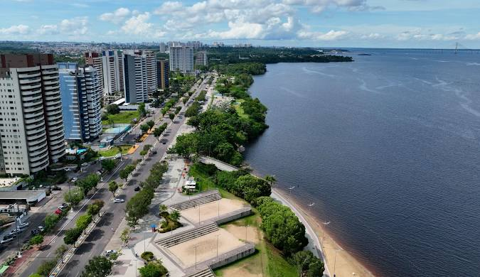
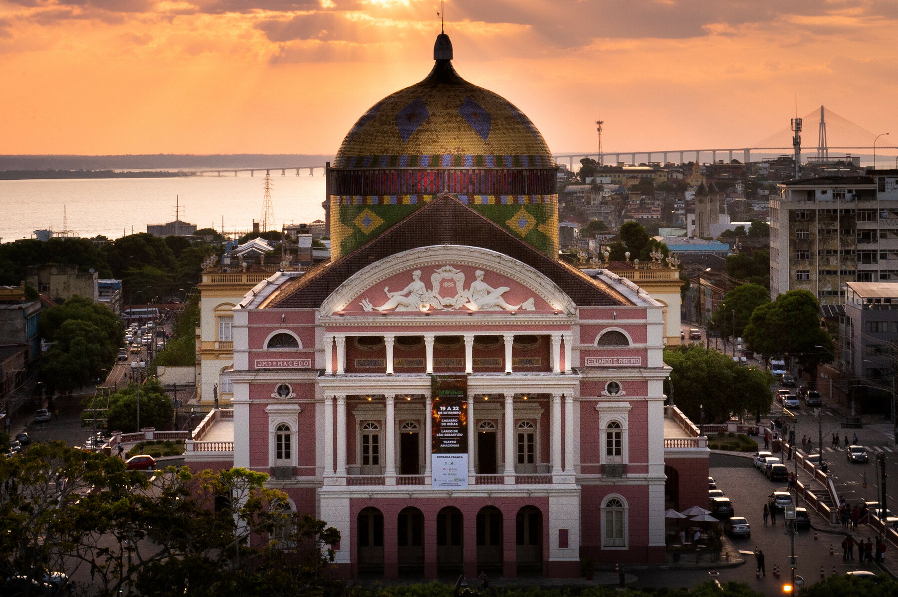

Manaus, capital do Estado do Amazonas é a cidade mais populosa do Amazonas, da Região Norte e de toda a Amazônia Brasileira, com mais de 2,18 milhões habitantes e um dos maiores destinos turísticos no Brasil.

O Teatro Amazonas é um dos mais importantes teatros do Brasil e o principal cartão postal da cidade de Manaus. Localizado no Centro da cidade, no Largo de São Sebastião, foi inaugurado em 1896 para atender ao desejo da elite amazonense da época, que queria que a cidade estivesse à altura dos grandes centros culturais. É amplamente considerado como um dos mais belos teatros do mundo.
